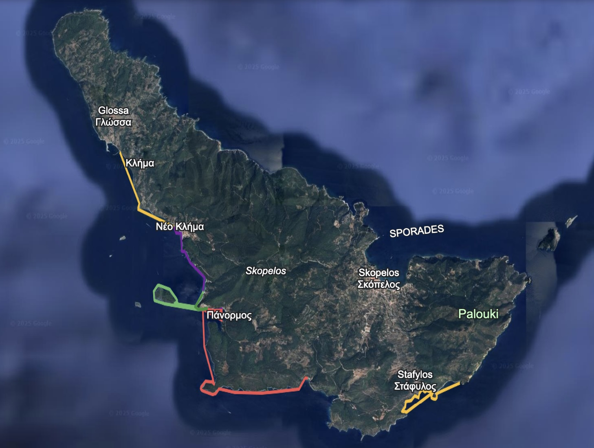

Some decisions aren't made with logic—they're made with the heart. I committed to swimming 33.3 kilometers in September 2026, in the waters of Greece, I didn't just sign up for a physical challenge. I am going back to my roots, returning to the element where I've always felt most alive: the water.
There's something primal about my connection to water. As a former athlete, I remember the ritual: waking up before dawn, the quiet walk to the pool, that first dive into the cool water as the world still sleeps. And then—the smell of chlorine that clings to your skin and hair for the rest of the day. To most people, it's just a chemical smell. To me, it's the scent of dedication. It's proof of work done. It's priceless.
Swimming isn't just exercise for me—it's meditation, therapy, and pure joy all rolled into one. The rhythmic breathing, the feeling of weightlessness, the total body engagement. When you're in the water, nothing else exists. No emails, no meetings, no distractions. Just you, the water, and the next stroke.
"The water doesn't care about your title, your salary, or your problems. It only responds to your effort."
Greece represents more than just a beautiful backdrop—it's where ancient athletes forged their legacies, where the Olympic spirit was born. Swimming in these historic waters feels like connecting with something timeless, something bigger than myself.
The distance—33.3 kilometers—is deliberately ambitious. It's not a sprint; it's an ultra-endurance test. It's long enough to be impossible without proper preparation, but achievable with discipline and unwavering focus. It's the kind of goal that demands respect and total commitment.
What I love most about training for this ultra swim is the daily commitment. There's no coasting, no "taking it easy this week." Every single day is game day. Every session in the pool is building the foundation for those 33.3 kilometers.
This mindset shift changes everything:
This daily discipline doesn't just build physical endurance—it builds mental resilience. You learn to push through discomfort, to quiet the voice that says "stop," to find another gear when you think you have nothing left.
In the tech world, we're always optimizing, always building, always shipping. But personal goals—especially physical ones—remind us that some things can't be rushed or delegated. You have to put in the time. You have to do the work.
Having a concrete goal like "swim 33.3km by summer 2026" gives me:
"A goal without a plan is just a wish." – Antoine de Saint-Exupéry
You don't wake up one day and swim 33 kilometers. You build toward it systematically, respecting the process and trusting the plan.
Physical training is only half the battle. An ultra swim of this magnitude is as much a mental challenge as a physical one. The water becomes a mirror—it reflects back everything: your doubts, your fears, your strength, your determination.
Training teaches you that resilience isn't about never struggling—it's about continuing despite the struggle. Some days the water feels like home. Other days it feels like you're swimming through concrete. You swim anyway.
Motivation gets you into the pool on day one. Discipline gets you into the pool on day 200 when it's cold, you're tired, and a hundred excuses are whispering in your ear.
Discipline is:
Discipline isn't punishment—it's self-respect. It's honoring the commitment you made to yourself.
"We are what we repeatedly do. Excellence, then, is not an act, but a habit." – Aristotle
In a world of constant notifications, infinite scrolling, and fractured attention, training for an ultra swim demands something radical: deep, sustained focus.
When you're swimming, you can't check your phone. You can't multitask. You're forced into singular focus:
This practice of intense focus in the pool translates to everything else. After hours of training your attention in the water, suddenly focusing on complex code, difficult conversations, or strategic planning feels easier. You've trained the muscle.
Training for an ultra swim gives you moments that can't be bought:
These moments remind me why I'm doing this. Not for medals or recognition, but for the process itself—the daily practice of becoming someone who can do hard things.
Training for 33.3km in Greece is teaching me lessons that extend far beyond swimming:
As a software engineer, I sit at a desk most of the day. I solve abstract problems with abstract tools. Swimming provides the counterbalance:
The discipline, focus, and resilience I'm building in the pool make me better at my job. The person who can swim 33km is the same person who can debug complex systems at 3am or lead a team through organizational change.
The journey from deciding to do this challenge to actually completing 33.3 kilometers in Greek waters is long. There will be:
But that's what makes it worth doing. If it were easy, everyone would do it. The challenge is what creates the transformation.
This ultra swim isn't just about covering 33.3 kilometers. It's about:
"The water is your friend. You don't have to fight with water, just share the same spirit as the water, and it will help you move." – Aleksandr Popov
I'll be documenting this journey—the training, the setbacks, the breakthroughs, and ultimately, the swim itself. Whether you're a swimmer, an endurance athlete, or someone working toward any big goal, I hope my experience provides insight, inspiration, or at least some entertainment.
Because at the end of the day, we're all swimming toward something. We're all training for our own version of 33.3 kilometers. The specifics don't matter—what matters is that we're in the water, doing the work, becoming who we're capable of being.
The alarm goes off tomorrow morning at 5:30am. The pool is waiting. Greece is 33.3 kilometers away. And every single stroke brings me closer.
Game day is every day. Let's swim.